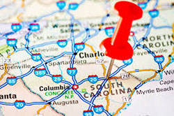
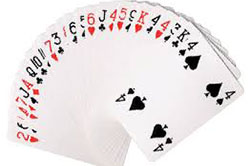
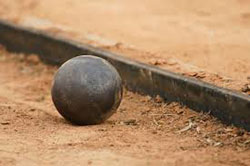
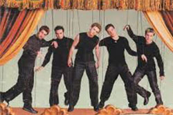

Welcome to my website! This is a place where I will have links to all of the work I am doing in my web design class. Please enjoy!
About Me
General

I am a Senior at St. Joseph's Catholic School in South Carolina. I am currently taking a web design class and this website includes the work I have been doing as a part of the curriculum for this class.
My favorite color is purple. My favorite snack is popcorn and chocolate chips. I want to study Chemical Engineering in college. I also really want to travel around the world. The first place I would like to see is Rome for two reasons: the history and the food.
Family

I have two siblings, an older brother and a younger sister. My older brother is in college right now, but my sister is a freshman in high school. My family spends a lot of time together; we love watching shows like Family Feud and playing games. We frequently play card games and board games, and we are extremely competitive. One of our new favorite games is a dice game called Quixx, which we have been playing a lot since we got the game for Christmas.
Extra-curricular Activities

When I am not studying, I like to play the piano. I also throw the discus and shotput for my school's track team, which I have been doing since I was in 7th grade. I also really enjoy waterskiing. I plan to join a waterski team in college. Another activity I participate in every Wednesday night over the summer is Swing Dancing. I went to swing dancing almost every week this past summer and plan to go again this summer. It is a fun way to socialize and see friends every week.
Music

I like to listen to all different kinds of music. One fun thing my sister and I do on the way to school in the morning is we pick themes for each day and listen to music according to that theme. For example, we have "alphabet day" where we pick a letter of the alphabet and only listen to songs whose titles start with that letter. When it rains, we usually listen to songs about rain or the weather. We also have Boyband Fridays frequently. On these days we listen to songs by various boybands from the past and present, including NSYNC, the Backstreet Boys, New Kids on the Block, One Direction, and the Jackson 5. My personal favorite of all of these boybands is NSYNC.